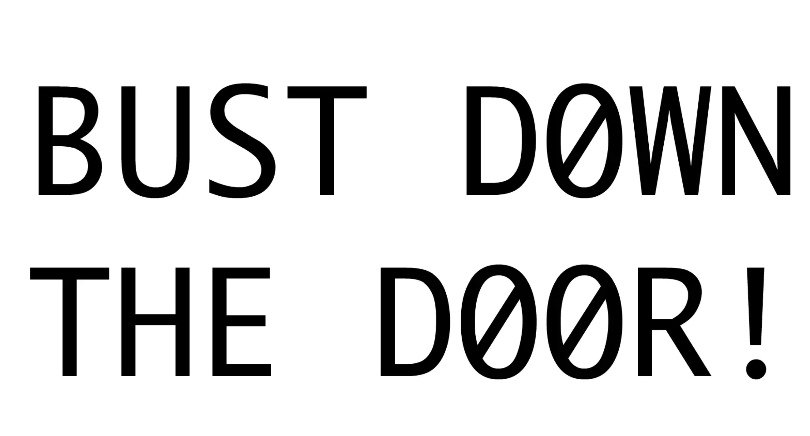

BUST DOWN THE DOORS
Young Hae Chang Heavy Industries
Created by a US/Korean couple calling themselves Young Hae Chang Heavy Industries, this narrative challenges the reader to keep pace with flickering, high-speed text synchronized to a jazz track. This piece contains several similar versions. Each version shifts perspective and pronouns to create a powerful and unsettling effect. YHC originally worked in Adobe Flash but now create text "movies." The strobe-like experience draws our attention to the strain of reading and the need to keep focus.